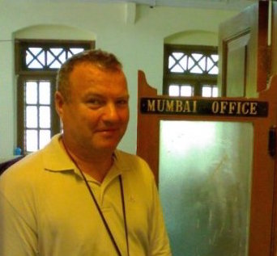

Birgits Alle 9, 5250 Odense SV
Årgang : 1958
Mobil : 40344403
LinkedIn
jan.schjoenning@gmail.com
Kompetent og erfaren udvikler med bred projekt erfaring fra udvikling over arkitektur til techlead. Ekspert i Java og hurtigt til at sætte sig ind i nye teknologier og domæner, har erfaring med offshore udvikling, og adrætte metoder og processer i flere forskellige projekter.
Jan har mange års erfaring i design og udvikling af software til telesektoren og medie branchen med fokus på industristandarder, flexibilitet og stabilitet. Jan har erfaring i brugergrænsefladedesign og -udvikling, herunder Android (eks. Tv-guiden tvtid) – men primært som indgangsvinkel til design af API og services.
God at bruge den brede erfaring til at få hurtigt overblik i alle tekniske aspekter af et projekt/i et forretnings domæne. Dette gør, at Jan arbejder meget målrettet og pragmatisk i det daglige og har stor fokus på kvalitet med hensyntagen til projekt leverancen.
Dynamic Konsulent 2018 til 2018 Design og implementering af dashboard til medie bureauer. Udviklings miljø Java, Spring Boot, Tomcat, MySQL, Cassandra.
TV 2 Mobil arkitekt 2013 til 2017 Design og udvikling af REST API, SOA/Microservices til forskelligt content. Udviklings miljø Java, jetty, Postgres MySQL, linux, Docker, Rancher, Apache Camel, Elasticsearch.
Capgemini Managing Consultant 2006 to 2013 Enterprise/Løsnings-arkitekt indenfor en ApplicationManagement kontrakt med TDC. En rightshore kontrakt, som gradvist blev transiteret til backoffice i Inden - sluttende med et split på ca. 10/90. Sidste store opgave var 1. del af et EA program, indførelse af en SOA arkitektur - med producthub, ordermanagement mv. Fratrådt i forbindelse med assignment hos TV 2 og nedluking af kontoret i Odense. Udviklings miljø Java, Weblogic, Oracle, OSM.
TDC IT Arkitekt 1999 to 2006 Vedligeholde og optimering af onpremise Mobilsystem til øgede trafikmængder. Migrering til ny COTS platform. Løsningsarkitekt i integrations team. Virksomhedsoverdraget til Capgemini. Udviklings miljø Cobol, Java, Weblogic, Oracle, Tandem NonstopSQL).
KMD Databaseadministrator 1998 to 1999 Primært ansat til design og implementering af decentrale databaser til KMD's første Cool gen baserede system til Miljø(registrering af miljø påvirkede steder). Sekundært DB2 administration. Fratrådt grundet tilbud fra TDC. Udviklings miljø SQL Server, Oracle, Cool gen, DB2.
Teledanmark EDB Databaseadministrator 1994 to 1998 Udviklings miljø Digital RDB, ACMS, Pascal, Cobol, Tandem NonstopSQL.
Fyns Telefon Databaseadministrator 1989 to 1994 Virksomhedsoverdraget til Teledanmark. Udviklings miljø Digital RDB, ACMS, Pascal).
ISS Data IRM - Information Resource Manager 1987 to 1989 Udviklings miljø DB2, Cobol, CSP, CICS.
Carlsberg Programmør 1984 to 1987 Udviklings miljø Cobol, CSP, CICS, DB2.
JDC Data Programmør 1982 to 1984 Udviklings miljø Cobol, PL1.
Fyns Data Service/JDC Data Operatør - holdleder 1980 to 1982
Elias B. Muus EDB assistent 1979 to 1980
Jydske Dragonregiment Værnepligtig 1978 to 1978
Fyns Data Service Operatør 1976 to 1978
Dashboard Design og udvikling af dashboard til brug for reklame bureauer. Integration til Facebook, Adwords samt andre reklame platforme. Udviklings miljø Java, Maven, PostgreSQL, Tomcat, Spring-boot, JPA, Docker.
EPG Design og udvikling af REST services til fælles EPG på tværs af klienter i TV-Anytime format. Datagrundlag for tvtid, presse samt streaming tjenesten PLAY. Integration til inhouse system og Ritzau. Udviklings miljø Java, Maven, PostgreSQL, Jetty, Apache Camel, Elasticsearch, Docker, Rancher.
Sportdata Design og udvikling af REST services til understøttelse af TV 2 Sportcenter app til mobile devices. Integration til Enet, Infostrada med flere. Udviklings miljø Java, Gradle, PostgreSQL, Jetty.
OVP Design og udvikling af platform til understøttelse af api udvikling til brug for streamingtjenesten PLAY. Principper for microservices blev anvendt Udviklings miljø Java, PostgreSQL, Jetty, Docker, Rancher.
Content management Design og udvikling af service component til alt redaktionelt indhold. Søgning blev understøttet af replikering til ElasticSearch. Udviklings miljø Java, PostgreSQL, Jetty, ElasticSearch.
ESB Valg af ESB miljø samt efterfølgende implementering af poc. Projektet stoppet pga funding og nådede kun delvis i mål. Erfaring opnået med Camel. Udviklings miljø WSO2, ServiceMix/Camel, Mulesoft.
TvTID Design og implementering af REST services til understøttelse af TV 2 TV guide (tvtid) til mobile enheder. Udvikling af TvTID til Android enheder(200k brugere). Udviklings miljø Android, Java, MySQL,jetty.
Push motor Design og implementering til push motor for mobile enheder, til understøttelse af aktuelle nyheder - breaking news. Dagligt sendes 1-5 nyheder til knap 1M anvendere. I forbindelse med projektet, udvalgt JAX-RS(Jersey) som primært framework til brug for REST api udvikling. Udviklings miljø Java, MySQL,jetty.
Drupal TvTid Implementering af fake nodes for content management. Udviklings miljø PHP, Drupal.
Retailmanagement Løsnins Arkitekt på implementering af Product Hub, Ordermanagement, Service api til CRM system. Stort 2 årigt rightshore projekt, primært med indiske medarbejdere. Design af komplet produkt struktur(SID model) dækkende alle TDC's produker. "Konfigurering" af OSM - dvs design af ordermanagement workflow med integration til TDC Mobil og fastnet systemer. Projektet var første del af et stort EA projekt som skulle gøre det muligt at betjene alle typer kunder på samme platform. Projektet indebar ophold i Indien 2x1måned. Udviklings miljø Java, Oracle Osm, Weblogic samt databaser, XML/XSLT.
Outsourcing Uddannelse og overdragelse af al integration til det Indiske backoffice, hvilket indebar 5 ugers ophold i Indien. Udviklings miljø Java, Oracle Weblogic samt databaser.
AKS Aktiv Kredit Sikring Design og implementering af services baseret på replikeret kredit data fra RKI. Udviklings miljø Java, Oracle Weblogic samt databaser.
Rating dokumentation Implementering og tilretning af Amdocs Ensemble rating flow for at kunne dokumentere penge strøm. Udviklings miljø Cobol, bash, Oracle Db.
Udskiftning af provisioneringssystem Udskiftning af TDC Mobil provisioneringplatform til Comtel InstantLink. Platformen er integration mellem CRM systemer og Teleteknisk udstyr. Løsningsansvarlig i 3 mands team, som forestod konfigurering, omfattende systematisk paralleltest med efterfølgende problemfri idriftsætelse. Udviklings miljø Cobol, TandemSQL.
B2B api-gateway Design og implementering af api til brug for alle TDC service providere. Service interface for mere end 2m abonnenter. Udviklings miljø Java, SOAP, Oracle Weblogic samt databaser.
Amdocs api Design og implementering af api til Amdocs ensamble CC&B system. Udviklings miljø Java, Oracle Weblogic.
NABS Migrering Primært beskæftiget design og implementering af produkt/installment konverterings regler fra egenudviklet system til Amdocs ensamble CC&B system. TDC's ledelse benævnte det Danmarks største og mest succesfulde migreringsprojekt. Udviklings miljø Cobol, Oracle, PL/SQL.
Yousee CRM&billing Kopiering, tilrettelse og idriftsættelse af hele TDC mobil CRM og billing platform til Yousee. Løsnings og implenteringsansvarlig for 3 mands team. Udviklings miljø Cobol, TandemSQL.
FKS Design og implmentering af løsning for registrering og automatisk ledningsvej fremfinding - dækkende både abonnent og mellemcentrale kabel netværk. Fyns Telefon var første helt digitale net i Danmark og dermed de første der introducerede automatikken. Udviklings miljø Digital RDB, Pascal, ACMS.
FIKS Design og implmentering af komplet dataarkitektur fo Fyns Telefon's integrerede CRM og billing system - mere end 1k tabeller. Eneste db administrator. Fyns Telefon var første teleselskab med fuld regningsspecifikation. Løsningen dækkede både mobil og fastnet abonnementer. Udviklings miljø Digital RDB.
MB MellemBryg. Design og implmentering af løsning til registrering af oprindelse og blanding af bryg. Udviklings miljø CSP, CICS, DB2.
Uddannelsessystem Design og implmentering af løsning til registrering og opfølgning på kurser. Carlsbergs første DB2 løsning. Udviklings miljø CSP, DB2.
H1
TappeHal1. Design og implmentering af løsning til opsamling af data fra produktionsapperat på decentral computer
Udviklings miljø COBOL, Honeywell Bull.